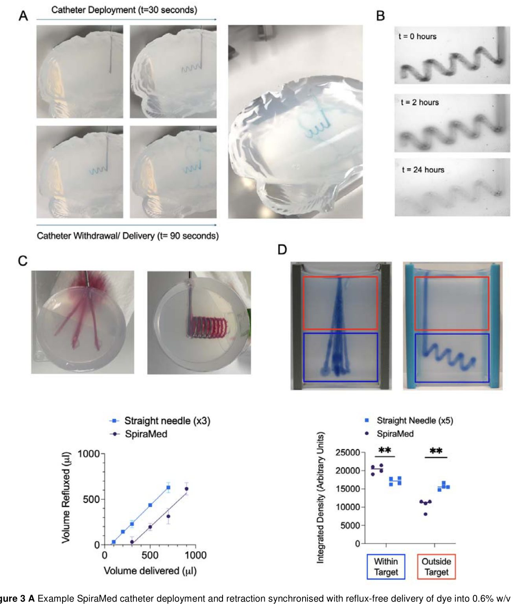
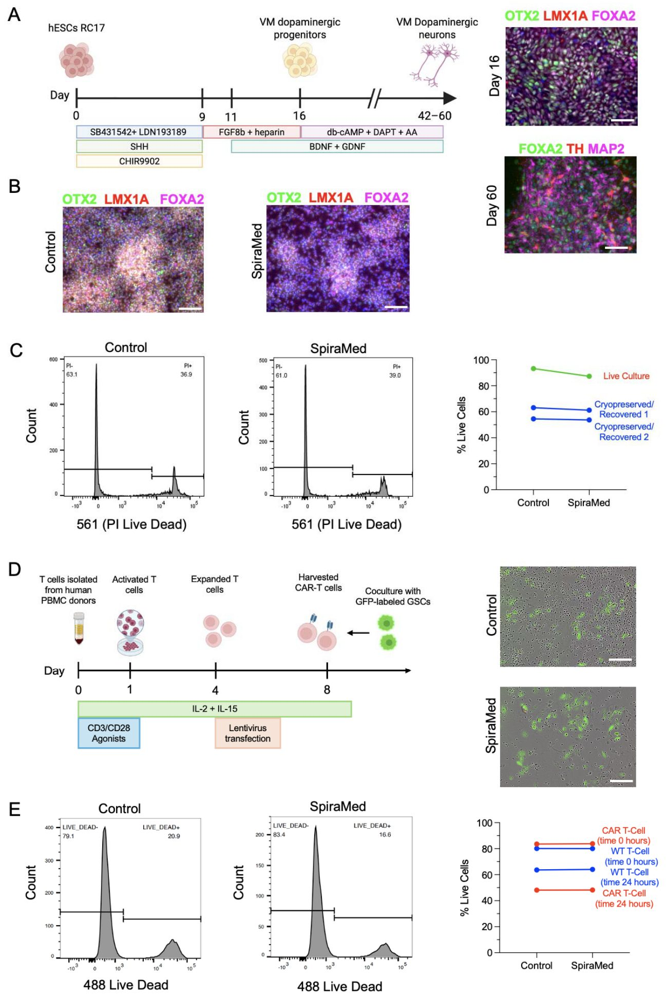

SpiraMed: miyaga dori yetkazib berishning yangi spiral usuli
 miya terapiyasini yetkazib berish konsepsiyasi.](../../media/2026-10-02/spiramed-a-stereotactic-helix-based-therapy-delivery-system-f1.jpg)
Rasmning to'liq tavsifi
1-rasm. SpiraMed miya terapiyasini yetkazib berish konsepsiyasi. A: Har bir frontal SpiraMed igna kirish trayektoriyasi striatumning uzun o'qi bo'ylab SpiraMed yetkazib berish kateterini ortogonal joylashtirish imkonini beradi. B: Spiral joylashtirishni ko'rsatuvchi SpiraMed 2-avlod prototipi kompyuter yordamida loyihalash. C: Parkinson kasalligi, AADC tanqisligi yoki Xantington kasalligida ATMP yetkazib berish uchun mo'ljallangan ikki tomonlama putaminal yetkazib berish strategiyasi. Standart frontal burg'ulash teshiklari orqali oldingi striatumga ikki tomonlama SpiraMed igna kirishi, so'ngra putamen maqsadli hajmini (yashil) qamrab oluvchi SpiraMed kateterini joylashtirish amalga oshiriladi. SpiraMed kateter spiral qadami 8 mm, diametri 8 mm, 4,5 spiral burilishlari bilan modellashtirilgan. Trayektoriya va maqsadli yadrolar alohida aksial, koronar va sagittal tekisliklarda (yuqori panellar) va mos keladigan 3D hajmli qoplamalar sifatida (pastki panellar) vizualizatsiya qilingan. D: Jarrohlik rezektsiyasi uchun yaroqsiz deb topilgan multifokal yuqori darajali gliomaga kimyoterapiyani yuborish uchun mo'ljallangan yetkazib berish strategiyasi namunasi. Frontal va parietal SpiraMed yondashuv trayektoriyalari mos ravishda birlamchi motor va sensorli korteksning old va orqa qismida rejalashtirilgan. Frontal kateterdan 6 ta va parietal kateterdan 4,5 ta spiral burilishli, 8 mm qadamli va 8 mm diametrli SpiraMed kateteri modellashtirilgan. Trayektoriyalar va taxminiy davolash hajmlari alohida aksial, koronar va sagittal tekisliklarda (yuqori panellar) va mos keladigan 3D hajmli qoplamalar sifatida (pastki panellar) vizualizatsiya qilingan.
Miyaning chuqur qismlariga dori yetkazib berish ko'plab teshiklar va uzoq davom etadigan jarrohlik amaliyotini talab qiladi. Yangi SpiraMed tizimi bitta kirish nuqtasi orqali kiritiladigan va dori vositasini maqsadli hudud bo'ylab bir tekis taqsimlaydigan spiral katetrdan foydalanadi. Bu jarrohlik vaqtini qisqartiradi va sog'lom to'qimalarning shikastlanish xavfini kamaytiradi.
Asosiysi
- SpiraMed bir nechta teshik o'rniga bitta kirishdan foydalanib, qon ketish xavfini kamaytiradi.
- Kateterning spiral shakli dori hajmini bemor anatomiyasiga moslashtirishga imkon beradi.
- Sinovlar hujayralarning kateterdan o'tgandan keyin ham yashovchanligini tasdiqladi.
Batafsil
Standart stereotaktik (miyaning aniq nuqtasiga asboblarni yo'naltirish usuli) dori yetkazib berish ko'pincha ignani bir necha marta kiritishni talab qiladi, bu esa qon ketish xavfini oshiradi va operatsiya davomiyligini 10-12 soatgacha uzaytiradi. SpiraMed tizimi ushbu muammoni to'g'ridan-to'g'ri miyaning maqsadli hududida ochiladigan spiral kateter yordamida hal qiladi. Spiralning geometriyasi — qadami va diametri — bemorning operatsiyadan oldingi MRT tasvirlari va qon tomir anatomiyasi asosida individual tarzda sozlanadi.
Agaroz fantomlar (miyaning gel modellari), qo'ylar va inson kadavrlari ustida o'tkazilgan klinik oldi sinovlarida SpiraMed terapevtik vositalarni tezroq va bir tekis taqsimlashini ko'rsatdi. Qurilmadan foydalanish dori vositasining igna kanali bo'ylab orqaga qaytib chiqishisiz (refluks) kiritiladigan hajmini 64 mkl dan 290 mkl gacha oshirish imkonini berdi. Muhimi, tizim orqali o'tish dopaminergik progenitor hujayralar va CAR-T hujayralarining hayotchanligini pasaytirmaydi, bu hujayra terapiyasi samaradorligi uchun juda muhimdir.
Cheklovlar
Tadqiqot klinik oldi bosqichida bo'lib, hayvonlar va kadavrlar ustida o'tkazilgan, shuning uchun odamlardagi xavfsizlik klinik sinovlarda tasdiqlanishi kerak.
Maqolaning batafsil tahlili
Annotatsiya
Stereotaktik igna yordamida yuborish usuli ilg‘or terapiya tibbiy mahsulotlarini (ATMP) inson miyasiga mahalliy yetkazib berishning standart usuli bo‘lib qolmoqda. Odatda, ATMP yuborish bir nechta traektoriyalarni talab qiladi, bu esa operatsiya vaqtini uzaytiradi va kümülatif xavflarni oshiradi. Bundan tashqari, dori vositasining qayta oqib chiqishi (refluks) va notekis taqsimlanishi klinik natijalarga salbiy ta’sir ko‘rsatadi.
Mualliflar «SpiraMed» deb nomlangan yangi yondashuvni taklif qilishadi, unda spiral shaklidagi kateterdan foydalaniladi. Tizim har bir nishon uchun yagona kirish traektoriyasi orqali ishlaydi. Spiralni orqaga tortish jarayoni terapiyani yuborish bilan sinxronlashtirilgan bo‘lib, bu nishon hududini soniyalar ichida to‘liq qamrab olish imkonini beradi.
Muhim
SpiraMed tizimi yagona kirish nuqtasi orqali nishon hududini to‘liq qamrab oladi, bu esa refluks xavfini kamaytiradi va jarrohlik amaliyotini tezlashtiradi.
Spiralning qadami va diametri bemorning individual nishon hajmi va qon tomir anatomiyasiga qarab, operatsiyadan oldingi stereotaktik rejalashtirish bosqichida aniq sozlanadi. Tizim samaradorligi agaroz fantomlarida, tirik qo‘ylarda va inson kadaver miya namunalarida sinovdan o‘tkazildi.
Natijalar shuni ko‘rsatdiki, dori vositalarini yetkazib berish hajmi va tezligi oshgan, nishon hududini qamrab olish sifati yaxshilangan. Shuningdek, refluks hodisalari va qon ketish asoratlari xavfi sezilarli darajada kamaygan. SpiraMed markaziy asab tizimi kasalliklarini davolashda hujayra va gen terapiyasining transformativ salohiyatini ro‘yobga chiqarish uchun yangi paradigma hisoblanadi.
Izoh
Agaroz fantomlar — bu miya to‘qimalarining fizik xususiyatlarini taqlid qiluvchi gel modellari bo‘lib, ular dori yetkazib berish aniqligini tekshirish uchun ishlatiladi.
Kirish
Markaziy asab tizimiga terapevtik vositalarni yetkazib berish muammosi
Markaziy asab tizimi (MAT) kasalliklari dunyo bo‘ylab 3,4 milliard odamga ta’sir qiladi va yiliga 11 million o‘limga sabab bo‘ladi. Qon-miya to‘sig‘i tizimli terapiyani cheklaydi, shu sababli dori vositalarining atigi 8 foizi klinik sinovlardan muvaffaqiyatli o‘tadi. Hujayra, gen va kimyoterapiya vositalarini kerakli konsentratsiyada yetkazishning yagona yo‘li ularni to‘g‘ridan-to‘g‘ri miya parenximasiga yuborishdir. Hozirda 60 dan ortiq gen terapiyasi va 20 ta hujayra almashtirish sinovlari o‘tkazilmoqda. Biroq, mavjud usullar kemiruvchilarda o‘tkazilgan klinikagacha bo‘lgan tadqiqotlardan olingan stereotaktik ignalarga asoslangan. ClearPoint Neuro SmartFlow kabi qurilmalar Parkinson kasalligida dopaminergik innervatsiyani tiklash kabi murakkab vazifalar uchun maxsus ishlab chiqilmagan.
Muhim
Mavjud yetkazib berish usullari to‘g‘ri ignalardan foydalanish bilan cheklangan, bu esa ko‘plab teshilishlarni talab qiladi, qon ketish xavfini va operatsiya vaqtini oshiradi.
TRANSEURO tadqiqotida (NCT01898390) fetal dopaminergik greftlarni kiritish har bir striatum uchun 5 ta traektoriya va har bir yarim shar uchun 10–12 soatlik operatsiyani talab qildi. 11 bemordan 2 tasida miya ichiga qon quyilishi kuzatildi, operatsiyaning uzoq davom etishi esa hujayralarning yashovchanligini pasaytirishi mumkin edi. SpiraMed tizimi ushbu cheklovlarni bartaraf etish uchun yaratilgan.
Zamonaviy neyroxirurgik yetkazib berish cheklovlari
Inson striatumining hajmi (35 000 mm³) sichqonnikidan (23 mm³) 1000 barobar katta. Bu jarrohlarni bir nechta traektoriyalardan foydalanishga majbur qiladi, bu esa qon tomirlarining shikastlanish xavfini (har bir igna kiritishda 1% gacha) va gematoma rivojlanishini oshiradi. Bundan tashqari, «refluks» (preparatning igna bo‘ylab orqaga oqishi) infuziya tezligi va taqsimot hajmini cheklaydi, bu esa nishon hududining notekis qoplanishiga olib keladi. Uzoq davom etadigan operatsiyalar anesteziologik xavflarni va yotoq yaralari rivojlanish ehtimolini oshiradi, miya omurilik suyuqligining sizib chiqishi esa miyaning siljishiga olib kelishi mumkin.
Izoh
Konveksion kuchaytirilgan yetkazib berish (CED) — miya to‘qimalarida preparatlarni bir tekis taqsimlash uchun bosim ostida yuborish usuli, ammo u ko‘pincha suyuqlikning orqaga oqib ketishi (refluks) muammosiga duch keladi.
Putamen gen terapiyasida diffuziya millimetrlar bilan cheklangan va CED dan foydalanish ko‘pincha nishon hajmining atigi 26 foizini qoplaydi. Orqa traektoriyalar orqali qamrovni yaxshilash urinishlari bemorni murakkab joylashtirishni va ignaning muhim kortikal zonalardan o‘tishini talab qiladi. Biz SpiraMed yechimini taklif qilamiz: putamenning uzun o‘qi bo‘ylab kateterni ortogonal joylashtirish bilan bitta frontal traektoriyadan foydalanish, bu xavflarni kamaytiradi va to‘liq qamrovni ta’minlaydi.
Ehtiyot bo'ling
Taqdim etilgan ma’lumotlar klinikagacha bo‘lgan konsepsiya isboti hisoblanadi; SpiraMed usulining samaradorligi va xavfsizligi klinik sharoitda tasdiqlanishi kerak.
Natijalar
SpiraMed spiral asosidagi yetkazib berish konsepsiyasi va prototiplash
SpiraMed tizimi standart stereotaktik uskunalar va rejalashtirish dasturlaridan foydalangan holda miyaning nishon qismiga yagona traektoriya bo'ylab dori vositalarini yetkazib beradi. Spiral kateter igna uchidan chiqib, nishon hajmini qamrab oladi va keyin doimiy sinxronlashtirilgan dori yuborish bilan orqaga tortiladi, bu esa reflyuksni (orqaga qaytishni) minimallashtiradi (1A-rasm; SN 1-rasm). Birinchi (mexanik) va ikkinchi (elektron) avlod prototiplari ishlab chiqilgan (1B-rasm; SN 1-5 rasmlar). Jarrohlik rejalari putamenga ikki tomonlama dori yuborish (1C-rasm) va yuqori darajali gliomani kimyoterapiya qilishni o'z ichiga oladi (1D-rasm).
Izoh
Stereotaksiya — miyaning chuqur tuzilmalariga aniq koordinatalar bo'yicha asboblarni kiritish imkonini beruvchi neyroxirurgik usul.
Birinchi avlod prototiplari belgilangan o'lchamdagi spiralni hosil qilish uchun qo'lda boshqariladigan mexanizmdan foydalanadi (SN 2-rasm). Ikkinchi avlod elektron privod yordamida kateterni egilgan yo'l bo'ylab harakatlantiradi va bir vaqtning o'zida spiral hosil qilish uchun o'q bo'ylab burilishni amalga oshiradi (2A-rasm; SN 3,4,5-rasmlar). Bu yondashuv Frenet-Serre formulalariga ko'ra kateterning aylanish tezligiga qarab spiral qadami va diametrini o'zgartirish imkonini beradi (2B-rasm). Uchi rtip=4 mm bo'lgan igna uchun erishish mumkin bo'lgan parametrlar ko'rsatilgan (2C-rasm). Komponentlar 316L zanglamaydigan po'latdan yasalgan bo'lib, bu biologik muvofiqlikni ta'minlaydi. Igna tashqi diametri 14G (2 mm), kateter esa 20G (tashqi diametri 0,91 mm, ichki diametri 0,6 mm) o'lchamiga ega.
Spiral o'lchamlari va joylashtirish
Inson putameni (taxminan 4x2x1 sm) uchun traektoriya uzunligi va qamrov hajmi o'rtasidagi optimal muvozanat sifatida taxminan 8 mm qadam va diametrli spirallar tanlandi (2D-rasm). Berilgan aylanish tezligida hosil qilingan spirallarning o'lchamlari juda yuqori aniqlikni ko'rsatdi (2E-rasm). Nazariy hisob-kitoblardan kichik farqlar ignaning elastik deformatsiyasi kabi omillar bilan bog'liq bo'lib, ular dasturiy ta'minotda osongina hisobga olinadi (2C-rasm; SN 4B-rasm).
Muhim
SpiraMed spiralini joylashtirish aniqligi neyroxirurgiyadagi standart talablardan (1–1,5 mm) yuqori va parametrlar barqarorligicha qoladi.
Spiralning to'qimalarga nisbatan chidamliligini tekshirish uchun miya va mushak to'qimalarini taqlid qiluvchi agaroza gellari (0,6–4,0% w/v) ishlatildi (2F-rasm). 2,0% gacha bo'lgan konsentratsiyalarda sezilarli o'zgarishlar kuzatilmadi. Faqat eng qattiq (4,0%) gellarda spiral qadami biroz kamaydi, ammo diametri o'zgarmadi (2G-rasm; SN 2-rasm). Xulosa qilib aytganda, SpiraMed usuli klinik aniqlik standartlariga to'liq javob beradigan bashorat qilinadigan yetkazib berishni ta'minlaydi.
Ehtiyot bo'ling
Tadqiqot fizik modellar (agaroza fantomlari) ustida o'tkazilgan, bu tirik miya to'qimalarining murakkabligini to'liq aks ettirmaydi.
Miya fantomlarida terapiyani yetkazib berish
Biz terapiya qamrovi va reflyuksni baholash uchun allura qizil va metilen ko'k bo'yoqlarini qo'llagan holda terapiyani yetkazib berish samaradorligini tahlil qildik. Kateterni tortib olish bilan sinxronlashtirilgan bo'yoq yetkazib berish 90 soniya ichida 110 mm traektoriya bo'ylab 110 mkl hajmni reflyukssiz yetkazib berishni namoyish etdi (3A-rasm). Agaroz nishonlarning interval tasvirlari spiral traektoriya bo'ylab diffuziya orqali maqsadli hajmni tez va izchil qamrab olishini sifat jihatidan tasdiqladi (3B-rasm).
Muhim
SpiraMed 290,5 mkl reflyuks chegarasini ta'minlaydi, bu standart ignalar uchun 64,0 mkl dan sezilarli darajada yuqori bo'lib, katta hajmdagi preparatlarni kiritish imkonini beradi.
SpiraMed'ni an'anaviy stereotaktik igna usuli bilan solishtirganda, spiral yetkazib berishning afzalligi aniqlandi (4C-rasm). Uchta to'g'ri igna o'tish joyi (har biri 100 mm) uchun reflyuks chegarasi 64,0 mkl (95% CI 34,3–90,2 mkl) ni tashkil etdi, bitta SpiraMed yetkazib berish uchun (3 mm qadam; 11 mm diametr; 8 burilish) bu ko'rsatkich 290,5 mkl (95% CI 181,1–365,1 mkl) ga yetdi (4B-rasm). Agaroz kubidagi bo'yoq taqsimotini baholash shuni ko'rsatdiki, SpiraMed uchun maqsadli hajmdagi o'rtacha zichlik 20351 ni tashkil etdi, besh karra standart in'ektsiyada esa 17136 (t=4,53, q=0,004). Shu bilan birga, «kirish korteksi»ga reflyuks SpiraMed uchun pastroq bo'ldi (10517 ga nisbatan 15603, t=5,56, q=0,0029) (3D-rasm).
ATMP biomoslashuvi
316L po'lati biomos keluvchi hisoblansa-da, biz spiralni joylashtirishning hujayra terapiyasiga (ATMP) ta'sirini tekshirdik. Biz o'rta miya dopaminergiya progenitor hujayralarini (vmDA) (8x10^6 hujayra/ml) ishlatdik. SpiraMed kateteri orqali o'tgandan so'ng (5 burilish, 1 mm/s tortib olish tezligi, 1 mkl/s uzatish), oqim sitometriyasi bilan o'lchangan hujayralar hayotiyligi o'zgarmadi (4B, 4C-rasm). CAR-T hujayralari uchun ham xuddi shunday natijalar olindi: yetkazib berishdan 0 va 24 soat o'tgach hayotiylik o'zgarmadi (4D, 4E-rasm).
Izoh
ATMP (Advanced Therapy Medicinal Products) — bu gen, to'qima yoki hujayralarga asoslangan preparatlar bo'lib, kiritish vaqtida juda ehtiyotkorlik bilan muomalani talab qiladi.
Katta hayvonlar va kadavr materiallarida sinovlar
Qo'ylarda o'tkazilgan tajribalarda kontrast modda miyaning chuqur tuzilmalariga yuborildi: SpiraMed bir yarim sharga va uchta standart traektoriya qarama-qarshi yarim sharga (5A, 5B-rasm). SpiraMed yordamida maqsadli zonada saqlanib qolgan kontrast hajmi yuqoriroq edi (o'rtacha 782,1 mkl ga nisbatan 196,8 mkl; p=0,0497) (5C-rasm). Standart usulda bir holatda mikroqon ketish kuzatildi, SpiraMed bilan esa asoratlar qayd etilmadi (5D-rasm). Nihoyat, Leksell G stereotaktik ramkasidagi inson boshlarida SpiraMed'ni klinik jarayonga integratsiya qilish imkoniyati tasdiqlandi: 1000 mkl kontrast yuborilgandan so'ng, KT spiral hajmining aniq shakllanishini ko'rsatdi (chapda 700,8 mm³, o'ngda 994,4 mm³) (5E, 7D–F-rasm).
Ehtiyot bo'ling
Hayvonlar va kadavr modellaridagi tadqiqot xavfsizlikni ko'rsatadi, ammo insonlarda klinik sinovlarni talab qiladi.
Muhokama
SpiraMed tizimining afzalliklari va klinik salohiyati
SpiraMed miya to‘qimalariga terapevtik vositalarni yetkazib berishning innovatsion usuli bo‘lib, mavjud texnologiyalarning cheklovlarini bartaraf etishga qaratilgan. Radial tarmoqlangan joylashtirish (RBD) usulidan farqli o‘laroq, SpiraMed «bir o‘tishda» (single-pass) terapiyani amalga oshiradi. RBD kateterni qayta-qayta kiritish va yo‘naltirishni talab qilib, jarrohlik jarayonini murakkablashtiradi va reflyuks xavfini oshiradi. 1-jadvalda keltirilganidek, SpiraMed terapiya hajmini, nishon hudud qamrovini va jarrohlik xavfsizligini sezilarli darajada yaxshilaydi.
Muhim
SpiraMed miya to‘qimalaridagi umumiy traektoriya uzunligini beshta an’anaviy stereotaktik yondashuvga nisbatan taxminan 50% ga qisqartiradi, bu esa to‘qimalar shikastlanishi va qon ketish xavfini kamaytiradi.
Izoh
ATMP (Advanced Therapy Medicinal Products) — bu gen terapiyasi, hujayra texnologiyalari va to‘qimalar muhandisligini o‘z ichiga olgan ilg‘or tibbiy mahsulotlar bo‘lib, ularni markaziy asab tizimiga aniq yetkazib berish talab etiladi.
Biz traektoriya uzunligini hisoblashda putamenning yuqori qon tomirliligi hisobga olinmaganini tan olamiz, shuning uchun klinik qo‘llashdan oldin qo‘shimcha qon tomir xavfsizligi bo‘yicha tadqiqotlar zarur. SpiraMed yordamida jarrohlik muddatining qisqarishi va ish jarayonining soddalashishi ATMP terapiyasini klinik amaliyotga keng joriy etish uchun muhim omil bo‘lishi mumkin.
Integratsiya istiqbollari va kelajakdagi ishlanmalar
SpiraMed texnologiyasi yangi klinik tadqiqot paradigmalarini ochadi. Masalan, Parkinson kasalligi bilan og‘rigan bemorlarda DBS (miyani chuqur stimulyatsiya qilish) va SpiraMed hujayra terapiyasini bir vaqtning o‘zida o‘tkazish orqali «soxta» (sham) operatsiyalar bilan bog‘liq axloqiy muammolarni hal qilish mumkin. Adaptiv DBS tizimlari orqali mahalliy maydon potensiallarini kuzatish esa hujayralarning funksional o‘rnashishini baholashga yordam beradi.
Ehtiyot bo'ling
Taklif etilgan kombinatsiyalangan terapiya va DBS integratsiyasi hozircha nazariy xarakterga ega va kelgusida klinik sinovlar orqali tasdiqlanishi kerak.
SpiraMed konveksion kuchaytirilgan yetkazib berish (CED) bilan birgalikda katta hajmdagi gen terapiyasi preparatlarini kiritish uchun ham qo‘llanilishi mumkin. Tizimni rivojlantirishning keyingi bosqichlari stereotaktik rejalashtirish dasturlarini, favqulodda vaziyatlarda kateterni chiqarish mexanizmlarini va intraoperativ MRT uchun titan qotishmalarini o‘z ichiga oladi. Robotlashtirilgan platformalar bilan integratsiya jarayonni yanada tezroq va aniqroq qilish orqali markaziy asab tizimi kasalliklarini davolashda yangi imkoniyatlar yaratadi.
Rasmning to'liq tavsifi
1-rasm. SpiraMed miya terapiyasini yetkazib berish konsepsiyasi. A: Har bir frontal SpiraMed igna kirish trayektoriyasi striatumning uzun o'qi bo'ylab SpiraMed yetkazib berish kateterini ortogonal joylashtirish imkonini beradi. B: Spiral joylashtirishni ko'rsatuvchi SpiraMed 2-avlod prototipi kompyuter yordamida loyihalash. C: Parkinson kasalligi, AADC tanqisligi yoki Xantington kasalligida ATMP yetkazib berish uchun mo'ljallangan ikki tomonlama putaminal yetkazib berish strategiyasi. Standart frontal burg'ulash teshiklari orqali oldingi striatumga ikki tomonlama SpiraMed igna kirishi, so'ngra putamen maqsadli hajmini (yashil) qamrab oluvchi SpiraMed kateterini joylashtirish amalga oshiriladi. SpiraMed kateter spiral qadami 8 mm, diametri 8 mm, 4,5 spiral burilishlari bilan modellashtirilgan. Trayektoriya va maqsadli yadrolar alohida aksial, koronar va sagittal tekisliklarda (yuqori panellar) va mos keladigan 3D hajmli qoplamalar sifatida (pastki panellar) vizualizatsiya qilingan. D: Jarrohlik rezektsiyasi uchun yaroqsiz deb topilgan multifokal yuqori darajali gliomaga kimyoterapiyani yuborish uchun mo'ljallangan yetkazib berish strategiyasi namunasi. Frontal va parietal SpiraMed yondashuv trayektoriyalari mos ravishda birlamchi motor va sensorli korteksning old va orqa qismida rejalashtirilgan. Frontal kateterdan 6 ta va parietal kateterdan 4,5 ta spiral burilishli, 8 mm qadamli va 8 mm diametrli SpiraMed kateteri modellashtirilgan. Trayektoriyalar va taxminiy davolash hajmlari alohida aksial, koronar va sagittal tekisliklarda (yuqori panellar) va mos keladigan 3D hajmli qoplamalar sifatida (pastki panellar) vizualizatsiya qilingan.

Rasmning to'liq tavsifi
2-rasm. A: SpiraMed kateter spiral qadami p va diametri d Frenet-Serret tizimiga ko'ra yetkazib berish ignasining ichki yo'l radiusi rtip, eksenel aylanish tezligi va kateterning deformatsiya xususiyatlarini aks ettiruvchi f konstantasi funksiyasi sifatida bashorat qilinadi. B: Tegishli tenglamalar va bashorat qilingan spirallar rtip= 4 mm, f = 0,86 va kateter aylanish tezligi = (i) 35°/mm (ii) 15°/mm (iii) 1°/mm uchun ko'rsatilgan (shuningdek, 4B-qo'shimcha rasmga qarang). C: O'lchangan va bashorat qilingan spiral o'lchamlari rtip= 4 mm, f = 0,86 bo'lgan yetkazib berish ignasi uchi radiusi uchun kateter aylanish tezligining funksiyasi sifatida ko'rsatilgan (shuningdek, 4C-qo'shimcha rasmga qarang). D: SpiraMed laboratoriya sinovi namunasi: joylashtirish va tortib olish (rtip=3 mm; aylanish tezligi = 5°/mm). E: Ko'rsatilgan har bir aylanish tezligida, bitta SpiraMed ignasi uchi rtip= 3 mm dan 5 ta ketma-ket SpiraMed kateterini joylashtirish natijasida spiral qadamlari (o'rta panel) va diametrlari (o'ng panel) ko'rsatilgan. F: Agaroz miya fantomlarida SpiraMed laboratoriya sinovi. G: Ko'rsatilgan har bir agaroza konsentratsiyasida uchta takroriy SpiraMed yetkazib berish kateteri bir xil SpiraMed ignasi uchi rtip= 3 mm orqali, kateter aylanish tezligi = 5,73°/mm bo'lgan holda uch marta joylashtirildi va tortib olindi. 2-yo'nalishli ANOVA agaroza konsentratsiyasining spiral qadamiga sezilarli ta'sirini (F = 12,74, df = 4, p<0,001), lekin joylashtirish soniga ta'sirini (F = 2,05, df = 2, p = 0,1462) aniqlaydi. Juftlik Tukey testlari 4,0% agaroza tarkibida boshqa barcha sharoitlarga nisbatan qadamning sezilarli darajada qisqarganligini aniqladi (barcha hollarda p<0,01), boshqa taqqoslashlar esa ahamiyatlilikka erishmadi. Agaroza konsentratsiyasi yoki joylashtirish sonining spiral diametriga sezilarli ta'siri aniqlanmagan.


Rasmning to'liq tavsifi
3-rasm. A: 0,6% (m/v) agaroza miya fantomi maqsadli hajmlariga bo'yoqni reflyukssiz yetkazib berish bilan sinxronlashtirilgan SpiraMed kateterini joylashtirish va tortib olish namunasi. B: Yetkazib berishdan keyin soatlab maqsadli hajm bo'ylab terapiya diffuziyasining 'Brain-in-a-box' vizualizatsiyasi. C: Bo'yoqning sinov hajmlari (100 mkl, 200 mkl, 300 mkl, 500 mkl, 700 mkl, 900 mkl) yangi agaroza bloklariga uch nusxada yuborildi, hajm 3 ta to'g'ri igna kiritish (chap panel) yoki bitta SpiraMed yetkazib berish (o'ng panel) o'rtasida taqsimlandi. Reflyuks qilingan hajm so'ruvchi qog'ozni oldin va keyin tortish orqali o'lchandi. Nol reflyuks bilan bog'liq maksimal yetkazib berish hajmi ('reflyuks chegarasi') baholari olingan chiziqli regressiyalarning x-kesishmalari sifatida taqdim etiladi: 3 ta to'g'ri igna uchun 64 mkl (34-90 mkl), bitta SpiraMed yetkazib berish uchun 290 mkl (181-365 mkl). F-test x-kesishmalaridagi/reflyuks chegarasidagi sezilarli farqni tasdiqlaydi (F-test F=101,0, DFn=1, Dfd=24, P<0,0001). D: Bitta SpiraMed (chapda) va beshta stereotaktik trayektoriya (o'ngda) uchun maqsadli hajm ichidagi (ko'k ROI)/tashqarisidagi (qizil ROI) tasvirlar va integratsiyalangan bo'yoq zichligi namunasi. Suvli eritmadagi jami 350 mkl metilen ko'ki yuborildi va har bir sharoitda 4 ta takroriy tajriba uchun takrorlandi. Maqsad ichidagi (juftlanmagan t-test t=0,004) va maqsad tashqarisidagi (juftlanmagan t-test t=0,001) bo'yoq zichligidagi sezilarli farqlar yaqqol ko'rinadi.


Rasmning to'liq tavsifi
4-rasm. A: Dopaminergik progenitor hujayra almashtirishlarini yaratish uchun ishlatiladigan differensiatsiya protokoli (chapda, Kunath va boshq.45). Grafting uchun mos progenitor populyatsiyalar 16-kuni immunoflyuoressensiya orqali OTX2, LMX1A, FOXA2 o'rta miya markerlarini ifodalaydi (yuqori o'ng panel). In vitro keyingi differensiatsiya 60-kunga kelib TH/MAP2 musbat dopaminergik neyronlarni beradi (pastki o'ng panel). Masshtab chiziqlari 20 mkm. B: 16-kunlik kultivatsiya qilingan dopaminergik progenitorlarda (chap panel) va dissotsiatsiyadan, SpiraMed yetkazib berish kateteriga aspiratsiyadan, so'ngra kateterni joylashtirish va hujayralarni yana plitalarga yetkazib berishdan keyin o'rta miya progenitor markerlarini immunoflyuoressent baholash. Masshtab chizig'i 100 mkm. C: Kultivatsiya qilingan mDA progenitorlarida (chapda) va SpiraMed tizimi orqali aspiratsiya va yetkazib berishdan keyin (o'rtada) propidium yodid (PI) (o'lik hujayra markeri) qo'shilishini oqim sitometrik baholash namunasi. Tirik hujayralar foizi (propidium yodid manfiy) 3 ta biologik takroriy hujayra partiyasi uchun ko'rsatilgan (bir partiya 16-kungacha tirik hujayra kultivatsiyasi, ikki partiya kriokonservatsiya qilingan va yetkazib berishdan 4 soat oldin tiklangan). Nazorat va SpiraMed orqali yetkazib berilgan fraktsiyalar o'rtasida omon qolishda farq yo'q (juft t-test t=1,9; df=2; p=0,20). D: Birlamchi inson donor PBMC'laridan CAR-T hujayralarini yaratish uchun ishlatiladigan protokolning sxematik tasviri (chapda) va to'g'ridan-to'g'ri (nazorat) yoki SpiraMed aspiratsiyasi/yetkazib berishdan keyin GFP-yorliqli glioma o'zak hujayralari bilan birgalikda kultivatsiya qilingan CAR-T hujayralarining yorqin maydon tasvirlari. Masshtab chiziqlari 100 mkm. E: CAR-T hujayralarida 488 nm kanal o'lik hujayra markeri qo'shilishini (chapda) va SpiraMed tizimi orqali aspiratsiya va yetkazib berishdan keyin (o'rtada) oqim sitometrik baholash namunasi. Tirik hujayralar foizi (488 manfiy) modifikatsiyalanmagan T-hujayra va CAR T-hujayra partiyalari va juft hamkasblari uchun, SpiraMed aspiratsiyasi/yetkazib berishdan 0 soat va 24 soat keyin ko'rsatilgan. Nazorat va SpiraMed orqali yetkazib berilgan fraktsiyalar o'rtasida omon qolishda farq yo'q (t=2,1, df=3, p=0,13).

Rasmning to'liq tavsifi
5-rasm. SpiraMed tirik hayvon va inson kadaver sinovi. A: Niopam KT kontrast hajmlari 4 ta qo'yning miyasiga bir yarim sharga frontal SpiraMed ignasini joylashtirish orqali va qarama-qarshi yarim sharga spiral joylashtirmasdan 3 ta SpiraMed igna trayektoriyasi orqali yetkazib berildi (chapda). Kateterni joylashtirish va kontrast vositani yetkazib berishga tayyor bo'lgan Kopf yirik hayvon stereotaktik ramkasida joylashtirilgan SpiraMed 2-avlod prototipi ko'rsatilgan (o'ngda). B: Aksial MRT spiral yetkazib berish trayektoriyasiga to'g'ri keladigan nuqtali kontrast kuchayishini ko'rsatadi (chapda). Koronar KT tasviri tirik qo'yda erishilgan burg'ulash teshigi va yetkazib berish trayektoriyasini ko'rsatadi (o'ngda). C: 4 ta qo'yda SpiraMed va igna nishonga olingan yarim sharlar uchun qayta qurilgan 3D kontrast hajmlari (Welch tuzatishi bilan juftlanmagan t-test ikki tomonlama p=0,0497, t=2,539, df=5,25). D: Umumiy patologiya bo'limlari 3 ta an'anaviy stereotaktik trayektoriya (qizil) va bitta SpiraMed yetkazib berish (ko'k) dan keyingi maqsadli hajmlarni tasvirlaydi. Mikroqon ketish ham 3 ta o'tish bilan bog'liq yuzaki oq moddada ta'kidlangan. E: Inson kadaverik validatsiyasi uchun ikki tomonlama putaminal yetkazib berish strategiyasi (yuqori chap panellar). Kompyuter tomografiyasi rekonstruktsiyasi kadaverik boshga qo'llanilgan Leksell G stereotaktik ramkasini, frontal burg'ulash teshigi orqali joylashtirilgan SpiraMed bilan ko'rsatadi (yuqori o'ng panellar). Chuqur miyaga ikki tomonlama spiral trayektoriyalarda kontrast yetkazib berish KT rekonstruktsiyalarida yaqqol ko'rinadi, bosh suyagi asosi suyak anatomiyasi ham ko'rinadi (pastki chap panellar) va hajmli 3D rekonstruktsiyalar sifatida (pastki o'ng panellar; chap yarim shar hisoblangan kontrast hajmi 701 mm3, o'ng yarim shar 994 mm3).

Tadqiqot sxemasi
Preprint hali taqriz qilinmagan. Xulosalar dastlabki.
Manba
| Manba | Kategoriya | Preprint litsenziyasi |
|---|---|---|
| bioRxiv | bioengineering | все права у авторов |
Manbalar
| Manba | Havola |
|---|---|
| Страница препринта | biorxiv.org |
| Полный текст (PDF) | biorxiv.org |
| DOI | doi.org |
| Метаданные Crossref | api.crossref.org |
| Europe PMC | europepmc.org |
Ma'lumotlar, kod va ilovalar
| Nima | Tavsif | Havola |
|---|---|---|
| Ilova | (supplements/754823_file02.docx) | media-1.docx |
| Ilova | (supplements/754823_file03.docx) | media-2.docx |
| Ilova | (supplements/754823_file04.mp4) | media-3.mp4 |